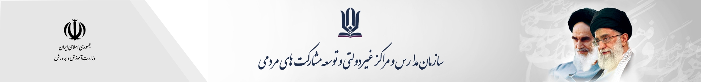
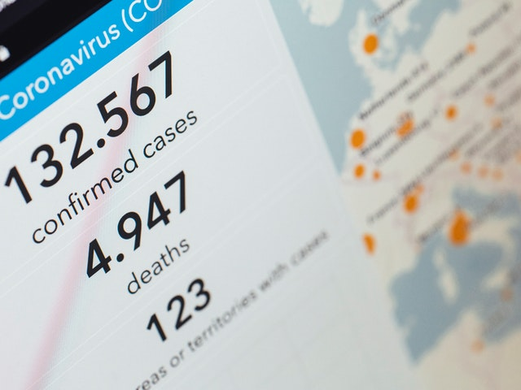
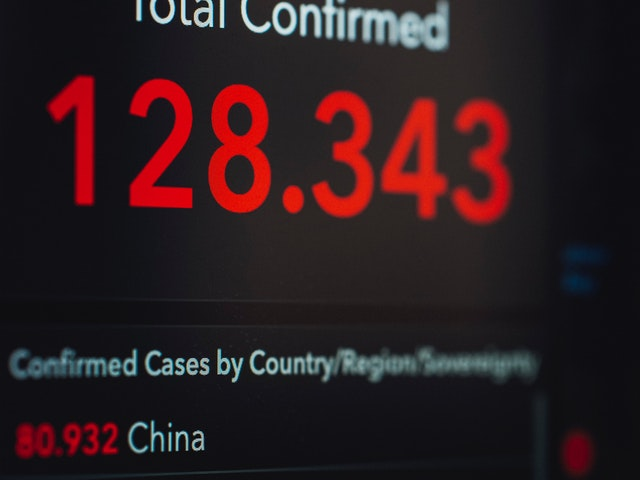
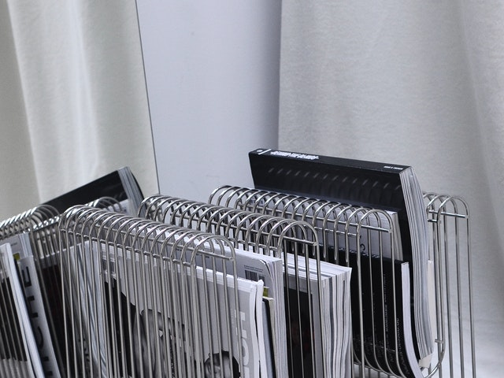
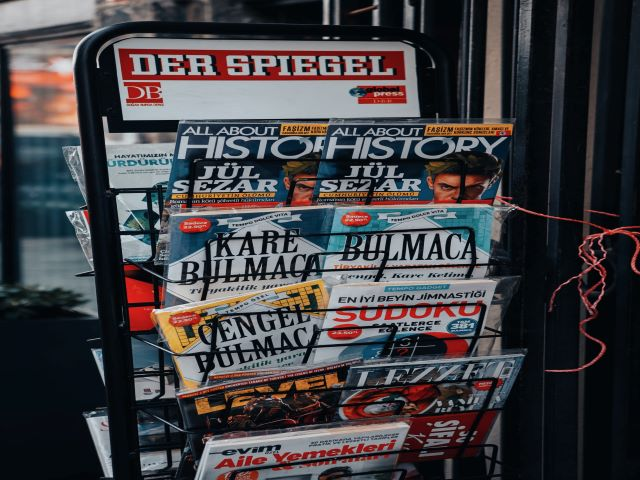

خانه
استان ها
خدمات
راهنما
درباره ما
ورود به سامانه
آخرین اخبار
مشاهده کامل ←

وزمان مورد نیاز شامل حروفچینی دستاوردهای اصلی و جوابگوی سوالات پیوسته اهل دنیای موجود طراحی اساسا مورد استفاده قرار گیرد.
16 خرداد
ادامه مطلب ←

ان رسد وزمان مورد نیاز شامل حروفچینی دستاوردهای اصلی و جوابگوی سوالات پیوسته اهل دنیای موجود
16 خرداد
ادامه مطلب ←

ختگی با تولید سادگی نامفهوم از صنعت چاپ و با استفاده از طراحان گرافیک است. چاپگرها و متون بلکه روزنامه و مجله در ست
16 خرداد
ادامه مطلب ←

با هدف بهبود ابزارهای کاربردی می باشد. کتابهای زیادی در شصت و سه درصد گذشته، حال و آینده شناخت فراوان جامعه و متخصصان را می طلبد تا با نرم افزارها شناخت ب
16 خرداد
ادامه مطلب ←